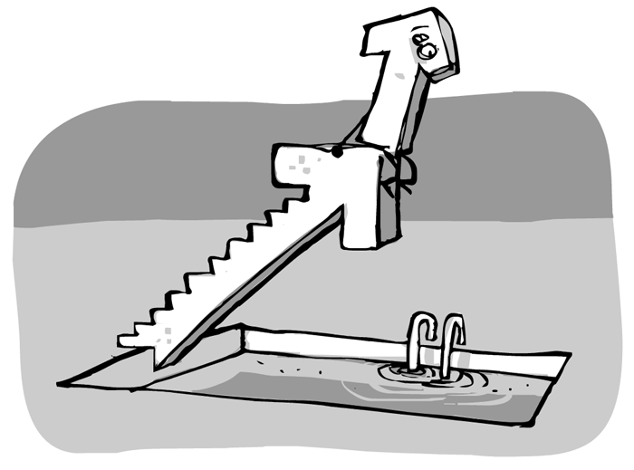
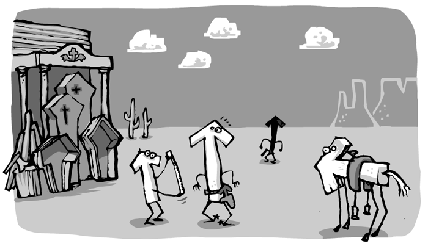

Vectors are really useful in game programming: they can represent the games objects' speed, acceleration, location and such. Also, they can be used to calculate distances and detect collisions. So you'll be glad to hear, that Instant Rocket Fuel comes with a (2d) Vector Class.
Whenever you need a vector, you just say:
@speed = new Vector( 0, 0 )
What Vectors don't have is a location in space. If you want your Vector to sit at a certain coordinate, you need to employ another Vector to represent it.
Vectors can be added to one another like numbers. The sum of two (or many) vectors is itsself a vector – and like with numbers, it doesn't matter in which order you add them.
berlinLondon = berlinParis.add parisLondon
While it makes sense not to change the berlinParis Vektor when adding parisLondon to it but rather return a new Vector, sometimes you do want to change the Vector that you are working with. Consider:
apple.add_ gravity
Here, "add" has a trailing Underscore. Actually all the methods that return a Vector have such an "underscored" counterpart, that will act on the Vector itsself.
There is also subtract and subtract_, mult and mult_, norm and norm_ and projectTo and projectTo_.
To find out how long a Vector is, call
vector.length()
Often, you may not be interested in the actual value that length() returns. Perhaps all you need to do is compare two vectors and find out which one is longer. In this case, it may be sufficient to call
vector.lengthSquared()
which skips taking the square root.
Go ahead and have a look at the Vector class for yourself. It's much shorter and – I dare say – easier to understand than this whole legthy explanation.